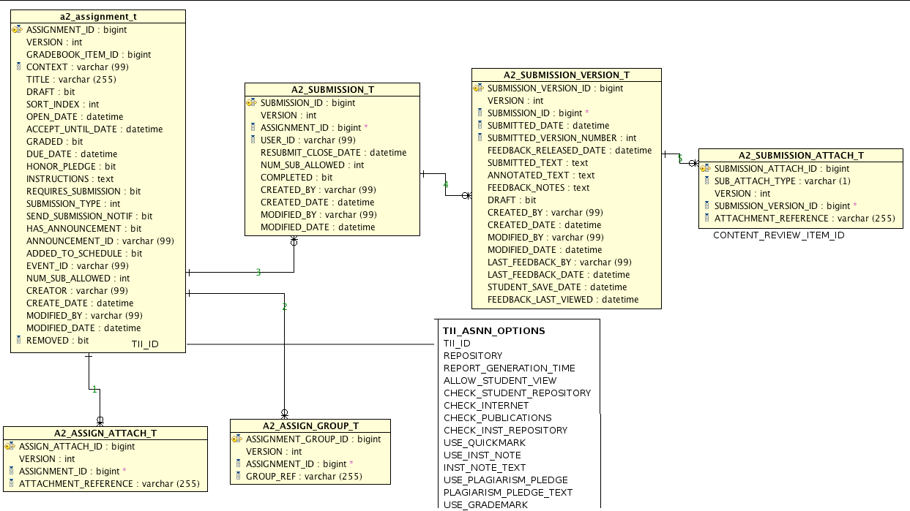

This document is a engineering design and time estimate for adding Turn It In integration to Assignments 2. It's purpose is to fully think out how the integration will be developed, down to the class and method signature level, in order to ensure a smooth implementation and at least halfway accurate time estimate (compared to the wildly inaccurate time estimates that are typicaly for software development).
While we are trying to think about how Grademark integration will factor into the designs, the concrete Grademark integration is not part of this document.
A number of short iterative milestones are included to make sure work progresses smoothly.
While some of this work can be done in parallel, this is a list of work tasks that need to be done, and the order in which they would be done from bottom (service layer) to top ( user interface ). These areas are fleshed out and described in more detail in the rest of the document.
CRS-TII: Factor HTTP connections to Turn It In Service out of org.sakaiproject.contentreview.impl.turnitin.TurnitinReviewServiceImpl. This code currently makes 7 HttpsURLConnection connections to the TII web services endpoint. Because the TII Endpoints and their parameters are very RPC-like with function codes and parameters, these calls are very similar and can be parameterized in a utility class. This class will start out in the same build unit and be titled: org.sakaiproject.contentreview.impl.turnitin.TurnitinConnUtil This should bring the TurnitinReviewServiceImpl source much closer down to the magic 1000 lines to make it easier to maintain and add our other modifications too. Estimate: 4 hours
CRS-TII: Add mechanism for creating TII Classes and Assignments. Currently, each time the queue is processed, for each ContentReviewItem, we attempt to create a class, enroll in it, and create the necessary assignment for it. This works out ok for each one because the HTTP calls to TII are very cheap and there are no unpleasant side effects if they fail. Also, the same default instructor information is used for each one.
What I imagine we'll need to do is either: Add some method calls to the ContentReview API for this functionality, or make a TII Utility Jar and create these out of band from the ContentReview Service.
something like
ContentReviewService.initializeSite(siteId,Properties) ContentReviewService.initializeTask(taskId,Properties)
Estimate: 4 hours
CRS-TII: Unit Tests for TurnitinConnUtil. Using our demo/test accounts with Turn It In, we should write a unit test that flexes this connection class by creating a course, submitting a few assignments etc. This can be a regular Sakai Test Harness test that runs during the maven build. If the person building the code hasn't put the necessary properties in the test configuration it should issue a warning, or perhaps actually fail the tests. Estimate: 4 hours
MILESTONE 1: We should be able to demonstrate, with a set of unit tests and JVM Scripts, connecting to our live TII Test Account and creating Sites, Tasks (Assignments), and Submissions that match the requirements of those that will be submitted from Asnn2.
Note that there appear to be some potential deficiences in the TII API noted below that we need check on.
Testing: Stub up Asnn2 Integration Test Area. This includes adding an example integration test and the Spring/Maven configuration for it, so we can test the items below. This will use the TestRunner and some scripts. Estimate: 4 hours
Model: Add the necessary extra tables and columns for storing the TII integration data. For this bit of the project we've thought about 2 different routes. The first was to use a properties model and add properties table(s) to Asnn2. The use of Properties can be seen on Sakai Users, Sites, and numerous applications mentioned in this essay. However, because it's likely we'll want to do reporting and other operations on the data, and because there are so many properties and they are very structured, it's likely we will create a table just to hold the options for a TII Assignment. This table will be generic, and could actually be used for things other than Asnn2 if it were possible to use tables across Sakai services.
This does bring the downside that we are finely coupling things to TII, but there is nothing generic about the TII options in the GUI designs, they are very specific to TII. What will happen, for OOTB installations using Asnn2, is that the extra join to the TII table will simply not happen if the TII support for Sakai is not enabled. This also creates a property on the Asnn2 model object that is specific to TII, but our model objects are already so customized for hibernate (rather than end-developer use), that this is probably fine, given that we document it well.
The second change needed is that we will add a ContentReviewItem ID to the A2_SUBMISSION_ATTACH_T table. This will be used for fetching the scores from the content review service. Unlike the Assignment level TII items, this piece is fairly generic and could play with different ContentReview implementations in the future. For now, we will be usign the bulk fetch from the ContentReviewService to get the scores. If this turns out to be too slow in the future, we could mirror/cache them here or somewhere else.
We will need to add a similar column to A2_ASSIGNMENT_SUBMISSION_VERSION_T as well if we ever decide that we should allow the text to be sumbitted as well.
The following model additions are shown in the following ER sketch. 
Model: Adjust hbm files and dao objects for updated ER above. Estimate: 8 hours
Logic: Create an External Logic service for TII. This will have operations such as whether TII is available and installed etc. For now that method(s) can be a poke through to a sakai.property. In the future, when it needs to take into account licensing for multiple campuses etc, more logic can be added. Estimate: 4 hours
Logic: Determine contact instructor for each course This will just be a utility function that picks the first instructor from the Sakai course to use as the main contact. This may use the section.role.instructor, or the Site Contact from the Site Properties. Estimate: 4 hours
Logic: Assignment2 ID to TII Assignment ID Mapping We need to write a bit of utility code to translate back and forth between these two. Turn It In is one of those systems where the human readable title has to be unique for all assignments within in a single site. Estimate: 4 hours
Logic: Assignment2 CRUD Logic changes First, we need to check and make sure TII is available using our ExternalTIILogic.
To start out here, I am going to assume that folks will not be logging into the actual www.turnitin.com user interface. Estimate: 18 Hours
Logic: Error Checking and Syncing of TII It seems fairly likely that instructors and students will actually be able to log in to www.turnitin.com. If that is the case, and we can't hide classes, we will need insidusouly robust error and sync checking all over the place to deal with scenerios such as an instructor logging into the class in the www.turnitin.com user interface and changing options on the assignments, such as repositories and when to generate originality reports.
Estimate: Black Hole
Logic: Assignment Submission Logic Estimate: 8 hours
Logic: Reading AssignmentSubmission(Version)s Estimate: 8 hours
MILESTONE 2: Demonstration of unit tests/ sakai scripts that flex the logic additions. These should show the CRUD capabilities of the Asnn2 Service tables, and also the integration with the ContentReviewService
UserInterface: Assignment Add/Edit Screen Add the extra section of TII options that will conditionally bind and display if TII is enabled. Estimate: 8 hours
MILESTONE 3: Ability to add TII functionality to an assignment via the Add/Edit assignments screen, update, and delete it from the GUI.
UserInterface: Score barometers. We need these score barometer things. I'm assuming we'll want the same colors that appear when logged into www.turnitin.com. Hopefully we can get a reference of all the color codes. Ideally, it would be nice if this were a small javascript component that initialized by using the score.
The more difficult part of this is determining the auxilary icons and math for aggregating them on the assignment level (say if you have multiple submissions and this barometer is for the entire assignment submission). Estimate: 4 hours
UserInterface: Inst View Submission Add a column to the ViewSubmissions table with the barometer icons. Estimate: 8 hours
UserInterface: View Assignment Submission Page The barometer is next to the attachments. Estimate: 4 hours
MILESTONE 4: From the GUI, submitted assignments are submitted to TII, and their scores are available from the GUI.
Task: Determine how we will pick the contact instructor for each TII course. This is mostly social engineering and IU process. TII can only have One contact instructor per course. The rest of the provisioning, such as students and courses is already implemented in the TII-ContentReview-impl, and while it may need small tweaking works pretty good. This may also be a dummy/ghost user?
Task: Modify and extend the service to specify which instructor account to sync. Currently a property controls one user to set as the instructor for the entire university.
Task: Modify and add signatures to ContentReview API to take in settings for the assignment. This is likely going to be all the items in the Add/Edit assignment drop down. This could potentially be done, by adding a Map as the last argument for implementation specific properties.
Task: Modify the TurnitinContentImplementation.java to actually use those extra properties. Basically this means settings like which Repository to use, time to submit originality report.
Task: Saving a new assignment
Task: Deleting/Editing an assignment 1) We have no idea yet how changing the properties of a TII assignment will affect TII if assignments have already been submitted. 2) If we use properties to capture the Assignment TII settings, we will include an explicit property detailing whether or not TII is in use, rather than depend solely on the absence of a property.
Task: Fetching an assignment 1) It seems like we are going to go the properties route, so fetching assignments will now require querying for their properties, and setting the options property on the Assignment2 object.
Task: Make a graph or comparsison of how our versions with match against TII versioning
Task: Submittting an assignment 0.5) What do we do if it's text only assignment and they try to use TII?? 1) Save the Submission and Version as usual 2) Queue the version in ContentReviewService 3) Figure out if we have to persist the return ID from CRS ourselves or not. Look into that API.
Task: Determine exactly the algorithm for calculating the barometers or stacks of paper icons for the Instructor Assignment Submissions. The problem is that, there can be multiple attachments, etc, and we are not sure how to aggregate those into 1 value for the student listing submissions screen. May require consulting with Lynn.